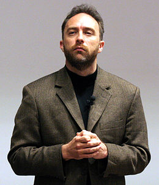

Википе́дия (англ. Wikipedia, произносится [ˌwɪkɨˈpiːdiə] или [ˌwɪkiˈpiːdiə]) — общедоступная многоязычная универсальная интернет-энциклопедия со свободным контентом[комм. 2], реализованная на принципах вики. Владелец сайта — американская некоммерческая организация «Фонд Викимедиа», имеющая 37 региональных представительств. Название энциклопедии образовано от английских слов wiki («вики»; в свою очередь заимствовано из гавайского языка, в котором оно имеет значение «быстро») и encyclopedia («энциклопедия»). Запущенная в январе 2001 года Джимми Уэйлсом и Ларри Сэнгером[6], Википедия сейчас является самым крупным и наиболее популярным[7] справочником в Интернете[8][9][10]. По объёму сведений и тематическому охвату Википедия считается самой полной энциклопедией из когда-либо создававшихся за всю историю человечества[11][12]. Одним из основных достоинств Википедии как универсальной энциклопедии является возможность представления информации на родном языке пользователя[13]. На май 2018 года разделы Википедии есть на 301 языке, а также на 493 языках в инкубаторе. Она содержит более 50 миллионов[1] статей. Интернет-сайт Википедии входит в топ-10 самых посещаемых сайтов в мире[14]. Главной особенностью Википедии является то, что создавать и редактировать статьи в ней может любой пользователь Интернета[комм. 3]. Все вносимые такими добровольцами изменения незамедлительно становятся доступными для просмотра всем посетителям сайта. В декабре 2013 года в заявлении ЮНЕСКО по случаю награждения Джимми Уэйлса, основателя Википедии, Золотой медалью Нильса Бора про Википедию было сказано, что она является «символом эпохи взаимодействия, в которую мы живём, и это не просто инструмент, это воплощение мечты, столь же древней, как человеческий интеллект и собрания Александрийской библиотеки»[15][16]. Надёжность и точность Википедии вызывают вопросы[17]. Википедию критикуют за возможность добавления ложной или непроверенной информации[18] и вандализма на её страницах. Однако научные исследования свидетельствуют о том, что в Википедии следы актов вандализма обычно оперативно устраняются[19][20]. Раздел Википедии на русском языке, по состоянию на 29 декабря 2022 года, насчитывает 1 880 502 статьи различной тематики, занимая 7-е место по количеству статей среди всех языковых разделов.
